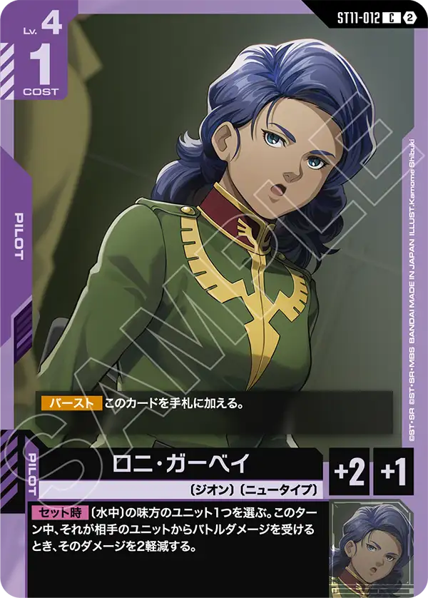
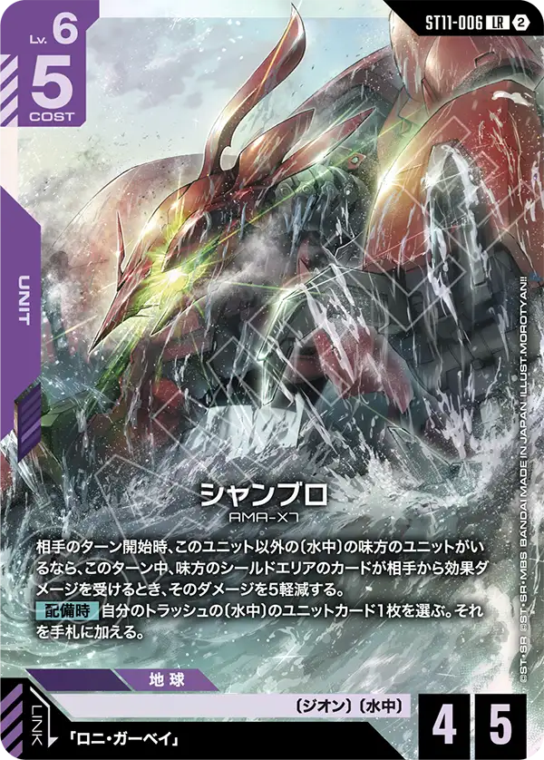
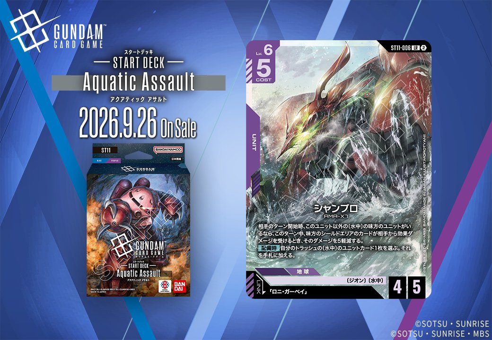
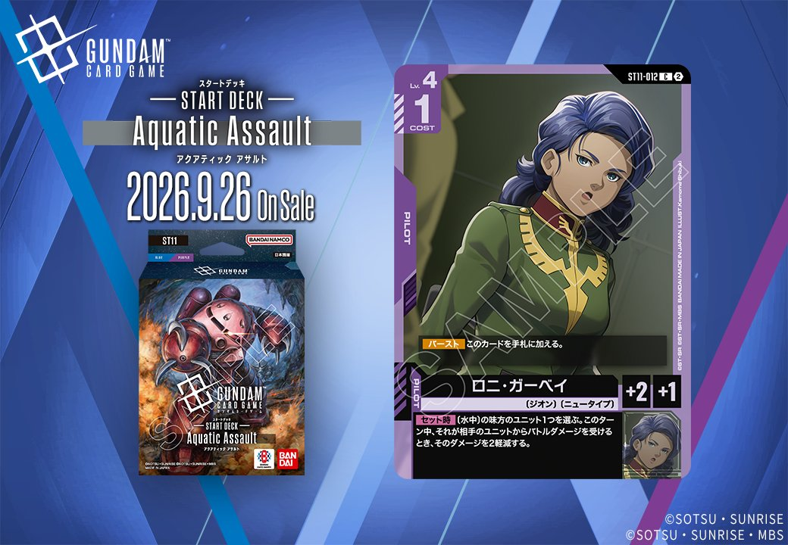

今回はST11「Generation Pulse」からPILOT「ロニ・ガーベイ」(ST11-012)とUNIT「シャンブロ」(ST11-006)、そしてGD06「Phantom Aria」から赤のUNIT「Ζガンダム」(GD06-035)の計3枚を取り上げます。中でも同日公開の「シャンブロ」と「ロニ・ガーベイ」は、UNIT側のリンク条件が対応するPILOTによって成立する組合せセットであり、両者を揃えることでリンクを前提とした運用が可能になる点が構築上のポイントです。

ロニ・ガーベイ (ST11-012)
| 色 | 紫 | タイプ | PILOT |
| Lv | 4 | コスト | 1 |
| 補正 AP | 2 | 補正 HP | 1 |
| 特徴 | 〔ジオン〕、〔ニュータイプ〕 | ||
効果: 【バースト】このカードを手札に加える。【セット時】〔水中〕の味方のユニット1つを選ぶ。このターン中、それが相手のユニットからバトルダメージを受けるとき、そのダメージを2軽減する。
ロニ・ガーベイはCOST1・AP2/HP1と軽量なパイロットで、【セット時】に〔水中〕の味方ユニット1つが受けるバトルダメージをこのターン中2軽減できる、防御寄りの効果を持つ。 同日公開のシャンブロ（ST11-006）とはリンクが成立し、〔ジオン〕・〔水中〕でまとまる同一ユニット運用に噛み合う。ただしシャンブロは【配備時】と相手ターン開始時の効果、本カードは【セット時】と発動タイミングが異なるため、同時発動ではなく各々独立して機能する点に注意。 HP1と紙耐久なので、セット後のダメージ軽減を活かしつつユニット側の生存を支える補助役と見るのが妥当だ。

シャンブロ (ST11-006)
| 色 | 紫 | タイプ | UNIT |
| Lv | 6 | コスト | 5 |
| AP | 4 | HP | 5 |
| 特徴 | 〔ジオン〕、〔水中〕 | ||
| リンク条件 | 「ロニ・ガーベイ」 | ||
効果: 相手のターン開始時、このユニット以外の〔水中〕の味方のユニットがいるなら、このターン中、味方のシールドエリアのカードが相手から効果ダメージを受けるとき、そのダメージを5軽減する。【配備時】自分のトラッシュの〔水中〕のユニットカード1枚を選ぶ。それを手札に加える。
シャンブロ(ST11-006)はLv.6/コスト5でAP4/HP5、【配備時】にトラッシュの〔水中〕ユニットを手札に回収でき、リソースを立て直しやすい点が特徴です。相手ターン開始時に別の〔水中〕味方がいれば、シールドエリアへの効果ダメージを5軽減する常駐効果を持ち、〔水中〕を複数並べる構築と噛み合います。 リンク先「ロニ・ガーベイ」(ST11-012)を搭載すればジオン・水中軸で運用でき、ロニの【セット時】は〔水中〕味方1つへのバトルダメージ2軽減、シャンブロは効果ダメージ軽減と守る対象が異なるため、それぞれ独立した防御手段として機能します。

Ζガンダム (GD06-035)
| 色 | 赤 | タイプ | UNIT |
| Lv | 5 | コスト | 4 |
| AP | 4 | HP | 4 |
| 特徴 | 〔エゥーゴ〕、〔ガンダムチーム〕 | ||
| リンク条件 | 特徴にエゥーゴを持つPILOT | ||
効果: ターン1回 自分のターン中、このユニットがバトルダメージで相手のユニットを破壊したとき、AP3以下の相手のユニット1つを選ぶ。それに2ダメージを与える。
Ζガンダム(GD06-035)はCOST4でAP4/HP4と赤の中量級らしい標準的なスタッツを持つユニット。ターン1回、自分のターン中にバトルダメージで相手ユニットを破壊すると、AP3以下の相手ユニット1つに2ダメージを与える追撃効果が強力です。 リンク条件は特徴にエゥーゴを持つパイロットで、〔エゥーゴ〕〔ガンダムチーム〕を軸に運用しやすい構成。破壊を起点に低APユニットへ効果ダメージを繋げられるため、小型ユニットの盤面処理で複数体を巻き込める点が実用的です。


関連カード
-
 シャア・アズナブル(GD05-093)紫系デッキ内採用率3.3% (154デッキ)
シャア・アズナブル(GD05-093)紫系デッキ内採用率3.3% (154デッキ) -
ガロード・ラン＆ティファ・アディール(GD02-094)紫系デッキ内採用率0% (1デッキ)
-
 ジャミル・ニート(GD03-096)紫系デッキ内採用率0% (1デッキ)
ジャミル・ニート(GD03-096)紫系デッキ内採用率0% (1デッキ) -
 ギャン(ST12-007)NEW紫系 — 同色・共通特徴: ジオン（新カード）
ギャン(ST12-007)NEW紫系 — 同色・共通特徴: ジオン（新カード） -

シャンブロ(ST11-006)NEW紫系 — 同色・共通特徴: ジオン（新カード） -
 カブル(ST11-009)NEW紫系 — 同色・共通特徴: 水中（新カード）
カブル(ST11-009)NEW紫系 — 同色・共通特徴: 水中（新カード） -
 アビスガンダム(ST11-010)NEW紫系 — 同色・共通特徴: 水中（新カード）
アビスガンダム(ST11-010)NEW紫系 — 同色・共通特徴: 水中（新カード） -

ロニ・ガーベイ(ST11-012)NEW紫系 — 同色・共通特徴: ジオン（新カード） -
 アナベル・ガトー(GD06-093)NEW紫系 — 同色・共通特徴: ジオン（新カード）
アナベル・ガトー(GD06-093)NEW紫系 — 同色・共通特徴: ジオン（新カード） -
 格闘戦(ST03-013)赤系デッキ内採用率22% (1034デッキ)
格闘戦(ST03-013)赤系デッキ内採用率22% (1034デッキ)